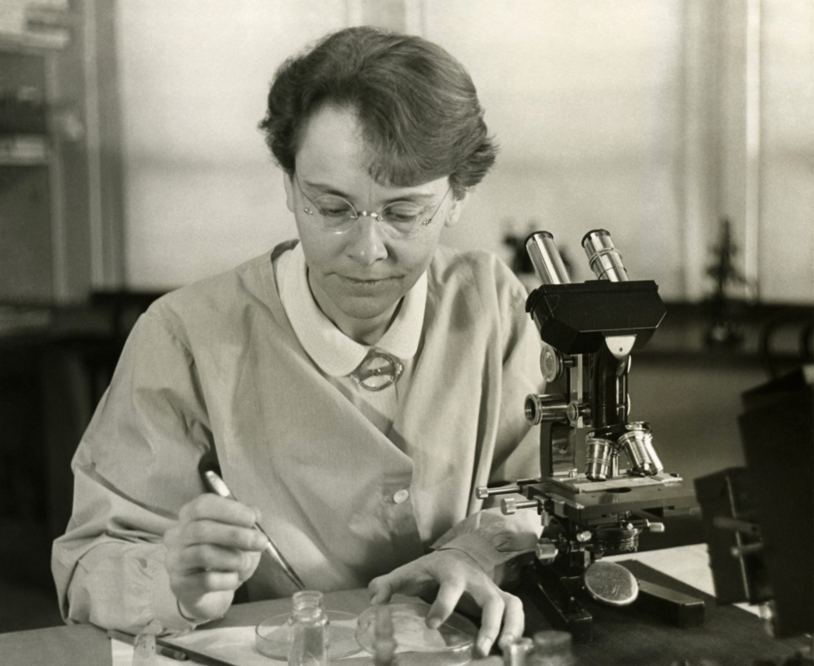

We are an international group of early-career scientists dedicated to mobilizing for large-scale initiatives and building capacity to bridge gaps between science and society. Our mission is to inspire and engage fellow scientists by establishing a peer network, developing and sharing resources, and instigating meaningful change.
Current Initiative: McClintock Letters
Improving communication between scientists and the public is crucial for rebuilding trust and addressing misinformation. We're inviting scientists to share their stories with their local hometown paper through the McClintock Letters Initiative — a national op-ed campaign.

Barbara McClintock (1902–1992), Department of Genetics, Carnegie Institution at Cold Spring Harbor, New York, shown in her laboratory. This photograph was distributed when McClintock received the American Association of University Women Achievement Award in 1947 for her work on cytogenetics. Image courtesy of the Smithsonian Institution Archives .
How Can I Get Involved?
Whether you're part of an established science policy group or an individual advocate, you're welcome here.
Join us on Slack – connect with fellow advocates, organize initiatives, and access shared resources.
Email: snapscipolorg@gmail.com